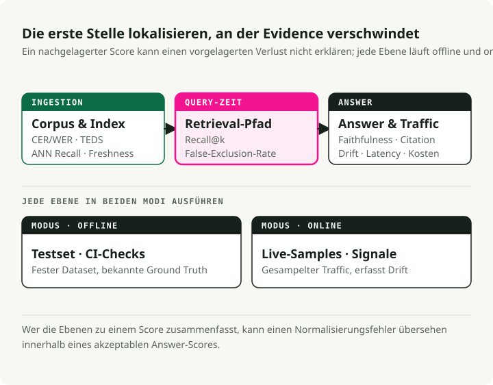
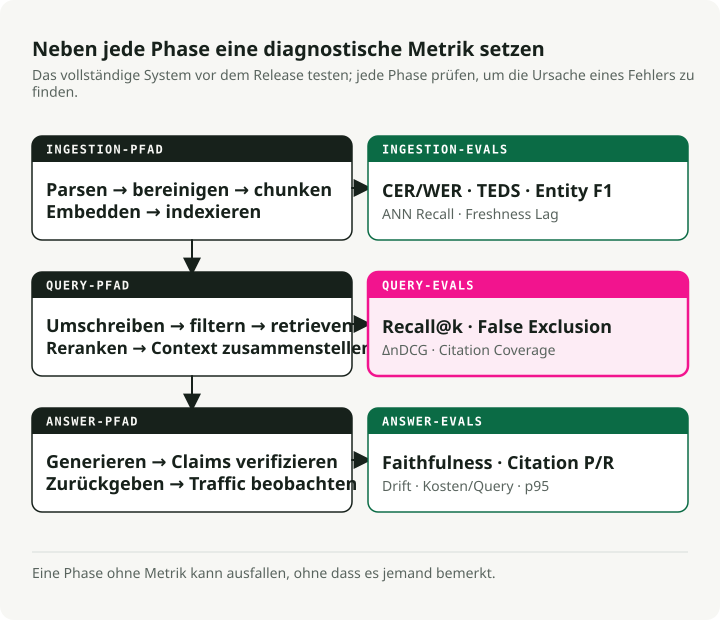
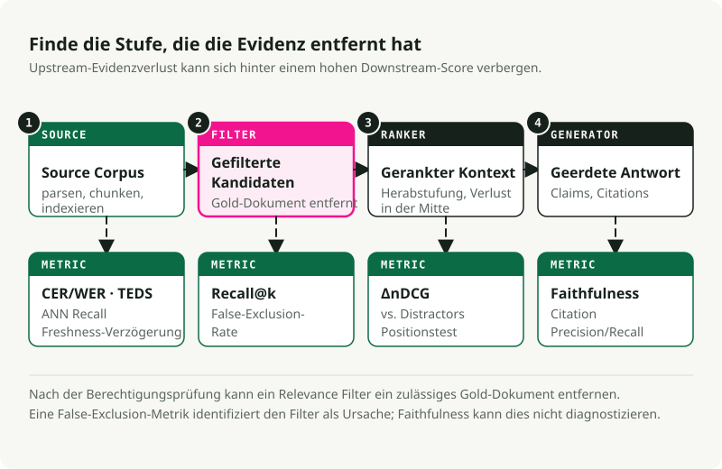

Automatische Übersetzung
Dieser Artikel wurde automatisch aus der englischen Originalversion übersetzt.
Evaluierung von RAG: Metriken für jede Stufe eines produktiven RAG-Systems
Teil 1 der Serie zu Production RAG
Ein RAG-System mit defekten Filtern kann monatelang laufen, bevor es jemand bemerkt. Die Pipeline liefert Antworten, die Latenz-Dashboards bleiben grün, und das einzige Anzeichen dafür, dass etwas nicht stimmt, ist, dass die Antworten selbst subtil falsch sind. „Subtil falsch“ löst bei niemandem einen Alarm aus.
Bessere Logs werden das nicht auffangen. Evaluierung schon, aber nur dann, wenn sie jede Stufe der Pipeline mit ihrer eigenen Metrik abdeckt. Dieser Artikel ist die Referenz, die ich mir gewünscht hätte, als ich herausfinden musste, welche Metriken tatsächlich wichtig sind.
Willst du direkt vorspringen und Code ausführen?
Ich habe die Metriken aus diesem Artikel in ein ausführbares Companion-Repo gepackt: slavadubrov/rag-evals-demo. make eval führt die komplette Suite aus — Retrieval-Metriken, Hybrid + RRF, Reranker-Uplift, Filter-False-Exclusion, Faithfulness, Lost-in-the-Middle, LLM-as-Judge mit Bias-Mitigation, Latenz — auf dem SciFact-Korpus. make benchmark sweeped Chunking × Embedding × LLM und schreibt einen Markdown-Report. Die Notebooks 00–09 behandeln jede Metrik einzeln; derselbe Wortschatz wie in diesem Artikel, reale Zahlen, kein Docker (eingebettetes Qdrant).
TL;DR
- Evaluierung definiert das System. Eine Stufe ohne Metrik ist eine Stufe, die stillschweigend ausfällt.
- Ein nützlicher Evaluierungs-Stack deckt Ingestion, Retrieval, Grounding der Generierung, Ontologie-Konformität und Systemsignale ab. RAGAS, TruLens, DeepEval, Arize Phoenix und der TREC 2024 RAG Track liefern dir Tooling. Sie wählen deine Metriken nicht für dich aus.
- Für metadaten- und ontologie-geerdetes RAG ist der häufigste Fehler der stille Filter. Ein falsches Tag oder ein fragiles hartes Prädikat lässt den Recall auf null kollabieren. Faithfulness kann trotzdem gut aussehen, weil das Modell treu „Ich weiß es nicht“ gesagt hat.
Die Folgeartikel gehen tief in einzelne Abschnitte. Nutze diesen hier als Index.
Teil 1 — Warum Evaluation zuerst
Das Senior-Signal
In einem RAG-Projekt sollte das Architekturdiagramm nicht das erste Artefakt sein. Das Eval-Set sollte es sein.
Du kannst nicht zwischen BM25 und Dense Retrieval, rekursivem und semantischem Chunking oder Cohere Rerank und BGE wählen, bevor du weißt, worauf du optimierst. „Bessere Antworten“ ist keine Metrik. „Faithfulness ≥ 0.85 auf einem Golden Set mit 200 Queries, das unsere drei wichtigsten Intents abdeckt, bei p95-Latenz < 1.5s und Filter-False-Exclusion-Rate < 2%“ ist eine Metrik.
Definiere den Harness, bevor du den Retrieval-Code schreibst. Der erste Harness wird falsch sein, und du wirst ihn überarbeiten. Eine Metrik zu überarbeiten ist viel billiger, als ein System zu überarbeiten, das du bereits ausgeliefert hast.
Drei Ebenen, nicht eine Zahl
Modernes RAG ist eine Pipeline, also muss Evaluierung ebenfalls eine Pipeline sein. Keine einzelne Zahl erfasst jeden Failure Mode.
Produktive Evaluierung hat drei Ebenen: offline (wurde die Wissensbasis korrekt vorbereitet?), online (wurden die richtigen Evidenzen für diese Query gefunden und verwendet?) und post-generation (ist die Antwort faithful und verifizierbar?). Jede Ebene stellt eine andere Frage. Wenn du sie in einen einzelnen Score zusammenklappst, kannst du grundlegende Fehler übersehen, etwa einen Normalisierungsbug, der den Recall zerstört.

Dieselbe Trennung klärt auch den Unterschied zwischen Online- und Offline-Evaluierung. Offline läuft gegen einen festen Datensatz mit bekannter Ground Truth. Das ist reproduzierbar, günstig zu iterieren und der richtige Ort für Komponentenauswahl, A/B-Vergleiche und CI-Gates. Online läuft gegen Live-Traffic. Es erfasst Signale, die du offline nicht faken kannst: Regenerationsrate, Dwell Time, Thumbs und echten Query-Drift. Es ist verrauscht und schwerer sauber zu instrumentieren.
Du brauchst beides. Nur offline verpasst Live-Drift. Nur online macht Regressionen schwer reproduzierbar. Beides zu tun ist mehr Arbeit, aber es ist die einzige Konfiguration, die dir nützliches Feedback vor und nach dem Launch gibt.
Komponentenebene vs. End-to-End
Es gibt zwei häufige Fehler. Eine rein end-to-end orientierte Evaluierung sagt dir, dass das System kaputt ist, aber nicht wo. Eine rein komponentenorientierte Evaluierung kann zeigen, dass jeder Teil besteht, während das Gesamtsystem trotzdem scheitert. Die Lösung sind einige wenige zentrale End-to-End-Metriken für Go/No-Go-Entscheidungen plus Komponentenmetriken für die Diagnose. Retrieval-Metriken erfassen Retriever-Regressionen. Generierungsmetriken erfassen Generator-Regressionen. End-to-End-Answer-Correctness erfasst Integrationsfehler.
Die Referenz-Frameworks (meinungsstarker Überblick)
| Framework | Besonders stark bei | Wo es schwächelt |
|---|---|---|
| RAGAS | Referenzfreie RAG-Metriken (faithfulness, answer relevancy, context precision/recall); das De-facto-Vokabular | Kosten durch LLM-Judges; intransparente Score-Komponenten beim Debugging; englischzentrierte Defaults |
| ARES | Trainierte Klassifikator-Judges pro Pipeline; weniger Annotationen als RAGAS-artige Ansätze; hohe Präzision bei ähnlichen Systemen | Schwergewichtiges Setup; du musst Modelle tatsächlich trainieren |
| TruLens | Komponierbare Feedback-Funktionen mit starker Erklärbarkeit; OpenTelemetry-Traces; produktionsfreundlich | Weniger Batteries-included bei RAG-spezifischen Metriken als RAGAS |
| DeepEval | Pytest-artige Unit-Tests für LLM-Outputs; G-Eval, Custom Metrics, CI/CD-nativ | Starker Einsatz von LLM-Judges = Kostenspitzen |
| Arize Phoenix | Starkes Tracing und Embedding-Visualisierung; erkennt Embedding-Drift visuell; OTEL-nativ | Die Metrikdefinitionen musst du selbst mitbringen |
| TREC 2024 RAG Track | Öffentlicher Benchmark für Nugget-Evaluierung (AutoNuggetizer), Support-Evaluierung und Fluency auf MS MARCO Segment v2.1 | Kein Runtime-Tool; ein Benchmark zur Kalibrierung |
Mein Default-Stack ist RAGAS für das Metrik-Vokabular, DeepEval für CI-Gates, Phoenix für produktives Tracing plus eigener Code für ontologiespezifische Metriken. Womit auch immer du anfängst, du wirst daraus herauswachsen. Nimm das Framework, das Custom Metrics einfach macht.
Für Benchmarks nutze BEIR (Thakur et al., NeurIPS 2021) für Zero-Shot-Retrieval-Generalisation, MTEB für allgemeine Embedding-Qualität, MIRACL für mehrsprachiges Retrieval und den TREC 2024 RAG Track für End-to-End-RAG-Evaluierung.
Teil 2 — Die Pipeline mit Evaluierungspunkten
Ein produktives RAG-System ist größer als „Dokumente embeddieren, Chunks retrieven, ein LLM aufrufen“. Jede Stufe zwischen Dokumentakquise und Auslieferung der Antwort kann ausfallen.

Jede Stufe im Diagramm hat mindestens eine Metrik. Eine Stufe ohne Metrik kann ausfallen, ohne dass es jemand bemerkt.
Die drei Lanes entsprechen den Stellen, an denen Fehler auftreten. Die Offline-Lane deckt alles ab, bevor überhaupt eine Query existiert: Parsing, Cleaning, Chunking, Embedding, Indexing. Die Online-Lane deckt alles ab, nachdem eine Query eingetroffen ist: Rewriting, Retrieval, Reranking, Kontextzusammenbau. Die Post-Generation-Lane deckt Checks ab, nachdem das Modell eine Antwort geschrieben hat: Faithfulness, Citation Verification, Drift-Signale und produktive Telemetrie.
Fehler akkumulieren sich entlang der Kette. Schlechtes Parsing begrenzt Chunking. Schlechtes Chunking begrenzt Retrieval. Schlechtes Retrieval begrenzt Reranking. Schlechtes Reranking begrenzt Generierung. Faithfulness misst nur die finale Antwort, nie die Ursache weiter oben.
Teil 3 — Offline-Evaluierung der Ingestion
Viele produktive RAG-Fehler beginnen in der Ingestion. Das System funktioniert auf sauberen Testdokumenten und scheitert dann an echten PDFs, Scans, Tabellen und chaotischen Korpusseiten.
Dokumentakquise und Parsing
Was du messen solltest:
- Vollständigkeit der Textextraktion:
extracted_chars / expected_charsauf einer gelabelten Stichprobe, berechnet pro Dokumentklasse. Es gibt kein kanonisches Package — schreib einen kleinen Harness, der die Parser-Ausgabe mit einer manuell bereinigten Referenz vergleicht. Achte auf fehlende Fußnoten, Header, Captions. -
OCR-Genauigkeit: CER (Character Error Rate) und WER (Word Error Rate), die Standardmetriken aus Speech/OCR:
\[ \text{CER} = \frac{S + D + I}{N}, \qquad \text{WER} = \frac{S_w + D_w + I_w}{N_w} \]wobei \(S\), \(D\), \(I\) Zeichenebenen-Substitutionen, -Löschungen und -Einfügungen sind und \(N\) die Anzahl der Referenzzeichen ist (Index \(w\) für die Wortvariante). CER 1–2% ist gut für gedruckten Text; >10% ist unbrauchbar. Für handschriftliches oder mehrsprachiges Material kann ≤20% noch praktikabel sein. Berechne das mit
jiwer(jiwer.cer(refs, hyps),jiwer.wer(refs, hyps)) oder HuggingFaceevaluate. Für Evaluierungskorpora sind FUNSD und SROIE die öffentlichen Benchmarks.from jiwer import cer, wer refs = ["Mars has two moons, Phobos and Deimos."] hyps = ["Mars has two m00ns, Phobos and Deirnos."] print(f"CER = {cer(refs, hyps):.3f}") # CER = 0.077 print(f"WER = {wer(refs, hyps):.3f}") # WER = 0.286 -
Treue der Tabellenextraktion: TEDS (Tree-Edit-Distance-based Similarity) misst, wie nah ein vorhergesagter HTML-Tabellenbaum an der Referenz liegt, normalisiert über die Größe des größeren Baums. Aus Zhong et al., 2020 (PubTabNet):
\[ \text{TEDS}(T_a, T_b) = 1 - \frac{\text{EditDist}(T_a, T_b)}{\max(|T_a|, |T_b|)} \]TEDS verwendet sowohl Struktur (Zeilen, Spalten, Spans) als auch Zellinhalt; TEDS-S entfernt den Inhalt und bewertet nur die Struktur. Referenzimplementierung: PubTabNet's
teds.py(verwendet internapted). Für Evaluierungskorpora siehe PubTabNet, FinTabNet und SciTSR. Naive Parser scheitern oft an Tabellen; benchmarke sie, bevor du ihnen vertraust. -
Erhalt von Layout / Struktur: Reihenfolge der Überschriften, Integrität von Listen, Lesereihenfolge in mehrspaltigen PDFs. Nutze DocLayNet als gelabelten Benchmark; für einen Parservergleich out of the box decken
unstructured,pymupdfund ein VLM-Parser wiedoclingden Großteil des Designraums ab.
Mein Take: benchmarke drei Parser (eine Tesseract-Baseline, ein VLM-OCR-Modell und deinen Vendor-Kandidaten) auf einer stratifizierten Stichprobe realer Dokumentklassen (saubere Scans, Fotos, tabellenlastige Seiten, mehrsprachig, Mathematik, Handschrift) bei fixer DPI. Berichte CER/WER pro Klasse plus TEDS für Tabellenseiten. Ohne das rätst du nur.
Cleaning und Normalisierung
- Genauigkeit der Boilerplate-Entfernung: Precision/Recall gegen menschlich gelabelte Boilerplate-Spans. Aggressives Entfernen zerstört relevante Inhalte; zu laxes Entfernen verschmutzt Embeddings. Vergleichswerkzeuge:
trafilatura,jusText,Resiliparse. Barbaresi (2021) benchmarked diese direkt gegeneinander. - Unicode-Normalisierung: Der Prozentsatz von Dokumenten, die identische NFC- und NFKC-Ausgaben erzeugen (berechnet mit dem stdlib-
unicodedata.normalize), ist ein nützliches Drift-Signal. Mismatches sind der Weg, wie Zero-Width-Joiner und ähnlich aussehende Zeichen den Retrieval-Recall zerstören. - Genauigkeit der Spracherkennung: F1 auf einer gelabelten mehrsprachigen Stichprobe. Kritisch für mehrsprachige Indizes. Nutze
fasttext-langdetect(Facebookslid.176),lingua-pyodercld3; FLORES-200 ist der Standardbenchmark für Low-Resource-Sprachen. -
Effektivität der Deduplizierung (MinHash / LSH): Precision/Recall deines Near-Duplicate-Detektors gegen ein manuell gelabeltes Set. Die zugrunde liegende Idee: Jaccard-Ähnlichkeit \(J(A, B) = \frac{|A \cap B|}{|A \cup B|}\) zwischen Document-Shingle-Sets über \(k\) zufällige Permutations-Hashes schätzen (Broder, 1997) und Near-Duplicates per LSH-Banding bucketing (Indyk & Motwani, 1998). Standard-MinHash mit 128 Hash-Funktionen und auf einen Jaccard-Threshold von 0.7–0.85 getuntem LSH-Banding ist der Default; benchmarke auf deinen Daten, weil der richtige Threshold korpusspezifisch ist. Tracke die False-Merge-Rate (verfälscht Antworten) getrennt von der Missed-Merge-Rate (verschwendet Index-Speicher).
datasketchist das kanonische Python-Package:from datasketch import MinHash, MinHashLSH def shingles(text: str, k: int = 5) -> set[str]: text = text.lower() return {text[i:i + k] for i in range(len(text) - k + 1)} def to_minhash(text: str, num_perm: int = 128) -> MinHash: m = MinHash(num_perm=num_perm) for s in shingles(text): m.update(s.encode("utf-8")) return m docs = { "d1": "Mars has two moons, Phobos and Deimos.", "d2": "Mars has two moons, Phobos and Deimos!", # near-dup "d3": "Curiosity rover landed on Mars in 2012.", } lsh = MinHashLSH(threshold=0.8, num_perm=128) for did, text in docs.items(): lsh.insert(did, to_minhash(text)) print(lsh.query(to_minhash(docs["d1"]))) # ['d1', 'd2'] -
PII-Scrubbing: Precision und Recall, separat berechnet pro Entity-Typ (E-Mails, SSNs, Namen, Adressen). Recall-Fehler erzeugen Compliance-Risiko; Precision-Fehler verschlechtern die Antwortqualität. Lege den Operating Point zusammen mit dem Legal-Team fest. Tools: Microsoft Presidio (am vollständigsten),
scrubaduboder ein feinjustiertes NER-Modell auf einem gelabelten Set.
Chunking — die Stufe, die Retrieval leise entscheidet
Chunking ist eine der wirkungsstärksten Entscheidungen in RAG. Die falsche Strategie kann mit denselben Embeddings einen Recall-Abstand von mehreren Punkten erzeugen. NVIDIAs Benchmarks von 2024 gaben Page-Level-Chunking für paginierte Dokumente die höchste Genauigkeit bei der geringsten Varianz; semantisches Chunking (benachbarte Sätze per Embedding-Ähnlichkeit clustern und an unähnlichen Grenzen schneiden — implementiert in LangChain's SemanticChunker und LlamaIndex's SemanticSplitterNodeParser) kann den Recall gegenüber Fixed-Window-Chunking verbessern; rekursives Character Splitting (zuerst Absatzumbrüche versuchen, dann Satzumbrüche, dann Wortumbrüche, bis jeder Chunk in die Zielgröße passt — siehe LangChain's RecursiveCharacterTextSplitter) bei 400–512 Tokens mit 10–20% Overlap bleibt ein guter Default für allgemeinen Text.
Zu trackende Metriken:
- Chunk-Kohärenz: \(\\text{coherence} = \\overline{\\cos(s_i, s_j)}_{\\text{within}} - \\overline{\\cos(s_i, s_j)}_{\\text{across boundary}}\), wobei \(s_i\) Satz-Embeddings sind. Gesunde Chunks sind intern ähnlich und an der Grenze unähnlich. Berechne das mit
sentence-transformersplusscikit-learn'scosine_similarity. - Boundary-Qualität: menschlich gelabeltes „ist das ein sinnvoller Schnitt?“ auf einer Stichprobe, plus ein struktureller Check, dass Chunks keine Tabellen, Listen oder nummerierten Abschnitte trennen (dein häufigster produktiver Bug).
- Optimale Chunk-Größe: sweep Token-Größen (128, 256, 512, 1024) und plotte Recall@k vs. Größe auf deinem Golden Set. Wähle den Knickpunkt. Nimm nicht einfach, was das Tutorial gesagt hat.
- Wirksamkeit des Overlaps: ablate den Overlap-Anteil (0%, 10%, 20%, 30%) und miss Recall@k. Ab ~20% gibt es in den meisten Korpora abnehmende Grenzerträge.
- Treue der Chunk-Attribution: Prozentsatz der Chunks, die einen verifizierbaren Source Pointer behalten (Seitennummer, Section Anchor, Doc ID). Auditierbarkeit erfordert das.
- Spätes vs. frühes Chunking: Late Chunking (Günther et al., 2024) embeddet das gesamte Dokument und segmentiert erst danach, wodurch globaler Kontext erhalten bleibt (Referenzimplementierung in
jina-embeddings-v3). Contextual Retrieval (Anthropic, 2024) stellt jedem Chunk LLM-generierten Kontext voran. Beides erhöht die Kosten. Benchmarke auf deinem Korpus, bevor du eines davon einführst.
Meine Meinung: strukturelles Chunking (Splitten an Überschriften, Tabellen und Sections — implementiert von Parsern wie unstructured.io oder durch Traversieren des AST, den dein Parser ohnehin schon erzeugt hat) wird zu wenig genutzt. Wenn deine Dokumente Struktur haben, nutze sie, bevor du Ähnlichkeitsheuristiken hinzufügst. Rekursives Character Splitting ist die Baseline; semantisches Chunking lohnt sich vom Overhead her vor allem bei unstrukturierter Prosa.
Metadata-Extraktion und Enrichment
- NER Precision/Recall/F1: pro Entity-Typ auf einer gelabelten Teilmenge. Standard im CoNLL/MUC-Stil. Berechne mit
seqeval(from seqeval.metrics import f1_score) für die BIO/IOB-Tag-sensitive Variante oder mit scikit-learn für Span-Set-Vergleiche. CoNLL-2003 und OntoNotes 5.0 sind die kanonischen Referenzkorpora. - Relation-Extraction-F1: noch wichtiger für ontologie-geerdete Systeme. 200 Dokumente manuell labeln. TACRED und DocRED sind die öffentlichen Benchmarks; für produktiven Code sind die Relation-Pipelines
opennreundspaCyvernünftige Startpunkte. - Genauigkeit bei Titel- / Überschriftenextraktion: Exact Match plus normalisierte Levenshtein-Ähnlichkeit (\(1 - \\frac{\\text{edit\\_dist}(a, b)}{\\max(|a|, |b|)}\)) gegen Ground Truth —
python-Levenshteinoderrapidfuzzliefern dir beides in einem Aufruf. - Erhalt hierarchischer Metadaten: Prozentsatz der Chunks, die ihre Parent-Section, ihr Parent-Dokument und ihren Ancestry-Pfad korrekt behalten. Diese Metrik entscheidet, ob dein RAG Fragen vom Typ „Was sagt das Kind von Policy X?“ beantworten kann.
Embedding-Generierung
- Benchmarks zur Modellauswahl: MTEB für allgemeine Leistungsfähigkeit (nDCG@10 ist die zentrale Kennzahl; mit dem MTEB Python package kannst du die Leaderboard-Ergebnisse lokal reproduzieren), BEIR für Zero-Shot-Generalisation, MIRACL für Mehrsprachigkeit. Top-Retrieval-Modelle liegen in einem engen nDCG@10-Band, aber englische MTEB-Scores sagen die Leistung in Sprachen mit weniger Ressourcen schlecht voraus.
- Domänenspezifische Evaluierung: Vertraue für Domain-Korpora nicht auf allgemeine Benchmarks. Baue ein domänenspezifisches Golden Set mit 200–500 Query/Doc-Paaren und reranke darauf Kandidatenmodelle mit
ranxoderpytrec_eval. Ich habe wiederholt gesehen, dass ein Modell auf Platz 5 von MTEB ein Modell auf Platz 1 in einer spezifischen Domäne um 15+ Punkte schlägt. - Erkennung von Embedding-Drift: Tracke distributionelles KL oder modellbasierten Drift zwischen einem festen Referenzfenster und rollierenden produktiven Embeddings; Nearest-Neighbor-Stabilität für ein fixes Probe-Set ist das einfachste praktikable Signal.
evidentlyundalibi-detectimplementieren beide modellbasierte und statistische Drift-Detektoren. Evidentlys Vergleichsstudie bevorzugt modellbasierte Drift-Erkennung als Default. - Multi-Vector vs. Single-Vector: Late Interaction (ColBERT / ColBERTv2 — siehe Khattab & Zaharia, 2020; Referenzimplementierungen in RAGatouille und PyLate) gewinnt out-of-domain typischerweise bei 6–10× höheren Speicherkosten (mit PLAID-artiger Kompression; unkomprimiert deutlich mehr). Lohnt sich, wenn dein Korpus weit von der Trainingsverteilung des Embedding-Modells entfernt ist. Ansonsten bleib bei Single-Vector.
Index-Konstruktion
- Recall@k unter Approximation: Vergleiche den Approximate-Nearest-Neighbour-(ANN)-Index mit einer exakten Brute-Force-Baseline bei gleichem k — in FAISS ist das
IndexHNSWFlat(oderIndexIVFFlat) vs.IndexFlatIP/IndexFlatL2. Ziel: ≥95% recall@10 vs. flat. Das Projektann-benchmarkstrackt Recall–QPS-Pareto-Kurven über Bibliotheken hinweg. - HNSW-Tuning: HNSW (Hierarchical Navigable Small World — ein mehrschichtiger Proximity-Graph; siehe Malkov & Yashunin, 2018, implementiert in
hnswlib, FAISS'IndexHNSWFlatund den meisten Vector-DBs) exponiert drei Stellschrauben:M(Graph-Fan-out),efConstruction(Candidate-Width zur Build-Zeit),efSearch(Candidate-Width zur Query-Zeit). Pragmatische Defaults: M=16–32, efConstruction=150, efSearch bei 100 starten und nach oben tunen, bis der Recall plateauiert. Ein Datensatz mit 10M Vektoren kann mit efSearch=500 98% Recall bei 5ms erreichen; efSearch=100 fällt auf 85% bei 1ms. Wähle den Recall-Punkt, den dein Evaluierungsset verlangt. - IVF-Tuning: IVF (Inverted File Index — partitioniert Vektoren per k-means in
nlistZellen und scannt zur Query-Zeit dienprobenächsten Zellen; siehe FAISS'IndexIVFFlatundIndexIVFPQ). Nutzenlist≈ √N als Startheuristik und tunenprobezur Laufzeit. IVF verarbeitet gefilterte Suche meist effizienter als HNSW, was für ontologie-geerdete Systeme mit vielen Metadatenprädikaten relevant ist. - Lag bei Update-Freshness: Zeit vom Doc-Commit bis zur Retrievability. Tracke p50 und p99. Für Systeme mit regulatorischen Anforderungen auch den Prozentsatz der Queries, die gegen veraltete Indizes bedient werden.
Teil 4 — Online-Evaluierung der Inferenz
Die Online-Lane ist dort, wo die meisten produktiven Metriken leben. Viele Teams hören bei Recall@k auf. Das reicht nicht.
Query Understanding und Rewriting
- Qualität der Query-Expansion: Recall@k-Uplift auf deinem Golden Set, expandierte Query vs. rohe Query. Wenn das auf harten Queries nicht mindestens +5% bringt, schadet dein Expander mehr als er hilft. Klassische PRF-Baselines (pseudo-relevance feedback) wie RM3 und Bo1 sind immer noch nützliche Sanity Checks; LLM-basierte Expansion muss sie schlagen.
- HyDE-Evaluierung: HyDE (Gao et al., 2022) generiert mit dem LLM eine hypothetische Antwort, embeddet sie und retrievt dagegen — ein nützliches Werkzeug, das Latenz und eine Halluzinationsoberfläche hinzufügt. Evaluiere über Recall@10-Uplift auf out-of-domain Queries (wo es glänzt) und bestätige, dass es auf in-domain Queries keine Verschlechterung gibt (wo es schaden kann). Nutze es als Fallback bei niedrigem Retrieval-Confidence, nicht als Default. Verankere es downstream mit einem Cross-Encoder-Reranker, um hypothetisch getriebene Retrievals zu validieren.
- Multi-Query-Generierung: Recall@k der Vereinigung aus N Rewrites vs. Single Query. Abnehmende Grenzerträge nach 3–4 Rewrites. Implementierungen: LangChains
MultiQueryRetriever, LlamaIndex'QueryFusionRetriever. - Genauigkeit der Intent-Klassifikation: Standard-Precision/Recall/F1 pro Intent (berechnet mit
sklearn.metrics.classification_report), aber die operative Metrik ist Routing Correctness — wird die richtige nachgelagerte Pipeline aufgerufen? - Adaptives Routing: Adaptive-RAG (Jeong et al., NAACL 2024) argumentiert überzeugend, dass nicht jede Query dieselbe Retrieval-Strategie verdient. Tracke die Router-Genauigkeit als Klassifikationsproblem gegen ein gelabeltes Set aus „braucht kein Retrieval / one-shot / iterativ“.
Retrieval-Metriken
Das sind die Basismetriken. Wenn du sie nicht trackst, kannst du nicht sagen, ob sich Retrieval verbessert.
| Metrik | Was sie misst | Wann sie sinnvoll ist |
|---|---|---|
| Recall@k | Prozentsatz der Queries, bei denen irgendein relevantes Doc in den Top-k ist | die wichtigste Retrieval-Metrik für RAG; wenn sie niedrig ist, ist alles downstream egal |
| Precision@k | Prozentsatz der Top-k, die relevant sind | nützlich, wenn das Context Window der Flaschenhals ist |
| MRR | Mittelwert von 1/Rank des ersten relevanten Docs | wenn Nutzer nur auf Top-1 oder Top-3 schauen |
| nDCG@k | positionsdiskontierter Gain, gewichtet nach Relevanzgraden | Standard-Retrieval-Metrik für abgestufte Relevanz |
| MAP | Mittel über Queries der Average Precision | wenn dich die komplette Rangliste interessiert |
| Hit Rate@k | binäre Version von Recall@k | schnelle Sanity-Metrik |
| Coverage | Prozentsatz der Golden Docs, die über alle Queries hinweg jemals retrievt werden | erfasst systematische Lücken im Index |
Die Formeln, zur Referenz (binäre Relevanz mit Relevant-Set \(R_q\) für Query \(q\), und \(\\text{rel}_i = 1\), falls das \(i\)-te retrievte Doc in \(R_q\) liegt):
Für abgestufte Relevanz gilt \(\\text{rel}_i \\in \\{0, 1, 2, \\dots\\}\); binäres nDCG ist der Spezialfall, der im Code unten verwendet wird. MAP ist der Mittelwert über Queries von \(\\text{AP}_q = \\frac{1}{|R_q|}\\sum_{i: \\text{rel}_i = 1} \\text{Precision@}i\). Siehe Manning, Raghavan, Schütze, Introduction to Information Retrieval, Kapitel 8, für die Herleitungen.
Für produktiven Code nutze ranx, pytrec_eval oder ir_measures — sie implementieren die komplette TREC-Metrikfamilie und behandeln abgestufte Relevanz korrekt. Vernünftige Startziele: Recall@10 ≥ 0.85, MRR ≥ 0.6, nDCG@10 ≥ 0.7. Sie sollten gegen ein realistisches Golden Set gesetzt werden, nicht aus einem Tutorial übernommen.
Der Test-Harness dafür ist kurz. Du kannst ihn aus einem Notebook heraus ausführen, noch bevor du überhaupt eine Vector-DB gewählt hast.
from math import log2
from statistics import mean
# synthetic gold set: query_id -> set of relevant doc ids
gold = {
"q1": {"d3"},
"q2": {"d7", "d2"},
"q3": {"d11"},
"q4": {"d5"},
}
# ranked retrieval results: query_id -> ranked list of doc ids (top-10)
runs = {
"q1": ["d8", "d3", "d1", "d4", "d2", "d9", "d6", "d10", "d12", "d13"],
"q2": ["d2", "d6", "d4", "d7", "d1", "d3", "d8", "d11", "d5", "d9"],
"q3": ["d11", "d2", "d3", "d4", "d1", "d6", "d7", "d8", "d10", "d12"],
"q4": ["d1", "d2", "d3", "d6", "d8", "d9", "d10", "d12", "d13", "d14"],
}
def recall_at_k(ranked, gold_set, k):
if not gold_set:
return 0.0
hit = sum(1 for d in ranked[:k] if d in gold_set)
return hit / len(gold_set)
def reciprocal_rank(ranked, gold_set):
# MRR contribution per query: 1/rank of the first relevant doc.
for rank, d in enumerate(ranked, start=1):
if d in gold_set:
return 1.0 / rank
return 0.0
def ndcg_at_k(ranked, gold_set, k):
# binary relevance: rel ∈ {0, 1}
gains = [1.0 if d in gold_set else 0.0 for d in ranked[:k]]
dcg = sum(g / log2(i + 2) for i, g in enumerate(gains))
# ideal DCG: all gold docs ranked first, capped by k
n_gold_in_topk = min(k, len(gold_set))
idcg = sum(1.0 / log2(i + 2) for i in range(n_gold_in_topk))
return dcg / idcg if idcg else 0.0
K = 5
print(f"Recall@{K}: {mean(recall_at_k(runs[q], gold[q], K) for q in gold):.3f}")
print(f"MRR: {mean(reciprocal_rank(runs[q], gold[q]) for q in gold):.3f}")
print(f"nDCG@{K}: {mean(ndcg_at_k(runs[q], gold[q], K) for q in gold):.3f}")
# Recall@5: 0.750
# MRR: 0.625
# nDCG@5: 0.627
Das ist dein Retrieval-CI-Gate. Hänge es an ein Golden Set mit 200 Queries und führe es auf jedem PR aus. Wenn eine der drei Zahlen regressiert, blockiere den Merge und behebe die Regression.
Das Companion-Repo pinnt die exakten Zahlen oben (Recall@5 = 0.750, MRR = 0.625, nDCG@5 = 0.627) als Unit-Test in tests/test_retrieval_metrics.py; Notebook 01 sweeped Recall@k / MRR / nDCG über einen echten SciFact-Index, und der produktionsnahe Harness liegt in evaluation/retrieval.py.
Hybrid Retrieval und Reciprocal Rank Fusion
BM25 (der klassische sparse lexikalische Scorer aus Robertson & Walker, 1994 — Exact-Term-Matching mit TF-IDF-artiger Gewichtung und Längennormalisierung, verfügbar in rank_bm25, Elasticsearch/OpenSearch und den meisten Suchmaschinen) plus Dense-Fusion via Reciprocal Rank Fusion (Cormack, Clarke, Buettcher, SIGIR 2009) mit k=60 ist ein starker Default. RRF ist score-agnostisch und umgeht damit die Score-Normalisierungsprobleme, die bei linearer Interpolation auftreten. Wenn du 50+ gelabelte Query-Paare hast, probiere eine konvexe Kombination und tune α. Hybrid plus ein Cross-Encoder-Reranker schlägt auf technischen, logartigen und Code-Korpora meist Dense-only oder Sparse-only Retrieval. Auf stark semantischen Korpora kann der Gewinn gering sein. Miss auf deinen Daten; eine schlechte Fusion-Konfiguration kann Dense-only unterbieten.
Die Implementierung passt in ein paar Zeilen.
from collections import defaultdict
# two retrieval lanes: dense embeddings and BM25.
dense = ["d3", "d7", "d1", "d4", "d2", "d9", "d10"]
sparse = ["d2", "d3", "d8", "d1", "d11", "d4", "d6"]
def rrf(rankings: list[list[str]], k: int = 60) -> list[tuple[str, float]]:
"""Reciprocal Rank Fusion (Cormack et al., SIGIR 2009).
score(d) = sum over rankings of 1 / (k + rank(d))
Score-agnostic: only rank position matters. k=60 is the canonical default.
"""
scores: dict[str, float] = defaultdict(float)
for ranking in rankings:
for rank, doc in enumerate(ranking, start=1):
scores[doc] += 1.0 / (k + rank)
return sorted(scores.items(), key=lambda kv: kv[1], reverse=True)
fused = rrf([dense, sparse], k=60)
for doc, score in fused[:5]:
print(f"{doc} score={score:.5f}")
# d3 score=0.03252 <- rank 1 dense, rank 2 sparse
# d2 score=0.03178 <- rank 5 dense, rank 1 sparse
# d1 score=0.03150
Beachte, was RRF nicht tut: Es schaut nie auf die rohen Ähnlichkeitsscores. Ein Dense Retriever mit Cosine 0.98 und eine BM25-Lane mit Score 17.4 sind nicht direkt vergleichbar. Wenn du sie mit z-Scores oder Min-Max-Scaling normalisierst, kannst du am Ende die Lane bevorzugen, die in diesem Batch die höchste Varianz hat.
RRF verwendet nur den Rank. Wenn ein Retriever ein Dokument auf Position 2 setzt, ist diese Stimme 1 / (60 + 2) wert, unabhängig vom Rohscore, der dazu geführt hat.
Hybrid + RRF auf SciFact: Notebook 02 vergleicht Dense vs BM25 vs RRF mit Per-Query-Deltas. Der produktionsnahe Fuser liegt in retrieval/hybrid_rrf.py; tests/test_rrf.py pinnt die kanonische Reihenfolge von d3 / d2 / d1 bei k=60.
Reranking
- ΔnDCG / ΔMRR: die einzige ehrliche Reranker-Metrik — Uplift gegenüber no-rerank auf deinem Golden Set in der Tiefe, die deine Anwendung tatsächlich nutzt. Berechne sie, indem du deine Retrieval-Metriken mit und ohne Reranker auf identischen Candidate Sets ausführst.
- Cross-Encoder vs. Bi-Encoder: Ein Bi-Encoder embeddet Query und Doc unabhängig voneinander (ein Vektor pro Seite) und scored per Dot Product; ein Cross-Encoder konkateniert Query+Doc und führt einen einzigen Forward Pass aus, der gemeinsam über beide attendiert. Cross-Encoder gewinnen bei Relevanz fast immer, zum Preis eines Forward Pass pro Kandidat. Referenzimplementierung:
sentence-transformersCrossEncoder. In veröffentlichten Benchmarks erreicht BGE-reranker-v2-m3 ~80ms pro 100 Kandidaten auf GPU und ~350ms auf CPU und matcht Cohere Rerank bei der Qualität ohne laufende Kosten. Betrachte diese Zahlen als Größenordnungen — deine Hardware und Batch-Größe werden sie verschieben. - Listwise vs. Pointwise: Pointwise scored jedes (Query, Doc)-Paar unabhängig; Listwise scored die gesamte Kandidatenliste gemeinsam, sodass das Modell direkt auf ein Ranking-Ziel optimieren kann. Listwise (BGE, ZeRank-2 mit kalibrierten Outputs) gewinnt allgemein bei nDCG; Pointwise lässt sich einfacher thresholden. ZeRank-2s kalibrierte Wahrscheinlichkeiten erlauben einfache
score > 0.7-Thresholds; rohe BGE/MiniLM-Scores benötigen Tuning pro Korpus.
from sentence_transformers import CrossEncoder
reranker = CrossEncoder("BAAI/bge-reranker-v2-m3")
query = "How do I rotate database credentials in production?"
candidates = [
"Production database credentials are rotated via Vault every 30 days.",
"The new logo was unveiled at the all-hands meeting.",
"To rotate prod DB creds, run the `rotate-secrets` GitHub Action.",
]
scores = reranker.predict([(query, c) for c in candidates])
ranked = sorted(zip(candidates, scores), key=lambda x: -x[1])
for doc, score in ranked:
print(f"{score:+.3f} {doc}")
Ein Reranker ist oft die wertvollste Ergänzung zu einer einfachen RAG-Pipeline. Auf den meisten Korpora, die ich gesehen habe, verschiebt das Hinzufügen eines Rerankers Precision@1 um 15–40%. Wenn dein RAG keinen hat, füge zuerst einen hinzu, bevor du Zeit in kleinere Retrieval-Tweaks investierst.
ΔnDCG und ΔPrecision@1 eines Cross-Encoders auf SciFact: Notebook 03; Modul: retrieval/reranker.py.
Kontextkonstruktion und Lost-in-the-Middle
Hierher kommen viele Fehler der Art „gutes Retrieval, schlechte Antwort“.
- Kontextrelevanz: Relevanzscore pro Chunk aus RAGAS
ContextRelevancyoder einem Cross-Encoder, aggregiert als Mittelwert und als Prozentsatz der Chunks unterhalb eines Thresholds. - Kontextnutzung: Wie viele der in den Kontext gesetzten Chunks wurden tatsächlich zitiert oder in der Antwort verwendet? Berechne das als \(\\frac{|\\text{cited chunks}|}{|\\text{retrieved chunks}|}\) über eine gelabelte Stichprobe. Niedrige Nutzung (< 30%) bedeutet, dass du für Tokens bezahlst, die du nicht brauchst.
- Lost-in-the-Middle-Erkennung: synthetisches Eval, bei dem du den Gold-Chunk an den Positionen {first, middle, last} in einem langen Kontext platzierst und die Answer Correctness misst. Der U-förmige Leistungsabfall ist real und in Liu et al. (TACL 2023) dokumentiert. Moderne Modelle schneiden besser ab als Modelle aus 2023, aber der Bias bleibt bestehen. Gegenmaßnahmen: nach dem Reranken Top-k neu anordnen, sodass der höchstbewertete Chunk zuerst oder zuletzt steht (LangChains
LongContextReordermacht genau das), oder mittlere Chunks aggressiv komprimieren. Miss das mit einem positionsstratifizierten Eval, nicht nur mit einem aggregierten Score. Ein ausgearbeitetes, ausführbares positionsstratifiziertes Eval liegt in Notebook 06 (Modul:evaluation/lost_in_middle.py). - Kontextkompression: Berichte die Kompressionsrate (Input-Tokens / Output-Tokens) zusammen mit der Answer Correctness. Tools: LangChains
ContextualCompressionRetriever, LongLLMLingua. Wenn Kompression die Correctness um mehr als 2 Punkte senkt, bist du zu weit gegangen.
Teil 5 — Die Filter-False-Exclusion-Rate
Diese Metrik bekommt ihren eigenen Abschnitt, weil die meisten Teams sie überspringen und sie reale Produktionsfehler verursacht.
Ein harter Metadatenfilter wie tenant_id = X AND product = Y AND locale = en-US kann den effektiven Recall auf null drücken, ohne die Standard-Retrieval-Metriken zu verändern. Das Gold-Dokument wird vor dem Ranking ausgeschlossen. Recall@k wird über die verbleibende Kandidatenmenge berechnet und kann daher gut aussehen. Faithfulness wird gegen den retrievten Kontext berechnet und kann ebenfalls gut aussehen; das Modell hat treu „Ich weiß es nicht“ gesagt.
Der rote Ast im Baum ist der häufige Fehler: Das richtige Dokument existiert, aber der Filter entfernt es vor dem Retrieval.

Die Metrik
filter_false_exclusion_rate =
(# queries where gold doc was excluded by metadata filter) /
(# queries with at least one gold doc)
Um sie zu berechnen, brauchst du (a) Ground-Truth-Doc-IDs für jede Eval-Query und (b) Instrumentierung, die die angewandten Filterprädikate loggt, nicht nur die finalen Ergebnisse. Ein vernünftiges Ziel ist < 2% auf produktivem Traffic. Wenn die Rate höher ist, zerstört deine Filterlogik den Recall.
Hier ist eine funktionierende Implementierung, die auch illustriert, warum der Fehler für einen naiv geschriebenen Retrieval-Harness unsichtbar ist.
# A small worked example that drops recall to zero silently.
docs = [
{"id": "d1", "tenant": "acme", "locale": "en-US"},
{"id": "d2", "tenant": "acme", "locale": "en-GB"},
{"id": "d3", "tenant": "globex", "locale": "en-US"},
{"id": "d4", "tenant": "acme", "locale": "en-US"},
{"id": "d5", "tenant": "acme", "locale": "de-DE"},
]
queries = [
# the gold doc lives in en-GB but the dynamic filter forced en-US
{"qid": "q1", "gold": {"d2"}, "filter": lambda d: d["locale"] == "en-US"},
# the gold doc is correctly within the tenant filter
{"qid": "q2", "gold": {"d4"}, "filter": lambda d: d["tenant"] == "acme"},
# the gold doc is in a different tenant — silently dropped
{"qid": "q3", "gold": {"d3"}, "filter": lambda d: d["tenant"] == "acme"},
# the gold doc passes the filter (de-DE locale match)
{"qid": "q4", "gold": {"d5"}, "filter": lambda d: d["locale"] == "de-DE"},
]
def filter_false_exclusion_rate(queries, docs):
n_with_gold, n_excluded = 0, 0
for q in queries:
if not q["gold"]:
continue
n_with_gold += 1
survivors = {d["id"] for d in docs if q["filter"](d)}
if not (q["gold"] & survivors):
n_excluded += 1
return n_excluded / n_with_gold if n_with_gold else 0.0
rate = filter_false_exclusion_rate(queries, docs)
print(f"filter_false_exclusion_rate = {rate:.2%}")
# filter_false_exclusion_rate = 50.00%
# The trap: a recall harness that only iterates over the SURVIVORS will
# either skip the empty-gold queries or report perfect recall on a doomed set.
def naive_recall_over_survivors(queries, docs, k=10):
recalls = []
for q in queries:
survivors = [d for d in docs if q["filter"](d)][:k]
survivor_ids = {d["id"] for d in survivors}
denom = len(q["gold"] & {d["id"] for d in docs})
if denom == 0:
continue # silently drops the query
visible_gold = q["gold"] & survivor_ids
recalls.append(len(visible_gold) / denom)
return sum(recalls) / len(recalls) if recalls else 0.0
print(f"naive recall (filtered universe) = {naive_recall_over_survivors(queries, docs):.2%}")
# naive recall (filtered universe) = 50.00%
assert rate == 0.5
Die Hälfte der Queries verliert ihr Gold-Dokument durch den Filter. Der naive Recall-Harness meldet 50% und du gibst dem Retriever die Schuld. Die Exclusion-Rate zeigt das eigentliche Problem: Das ist ein Predicate-Bug. Zwei Queries hatten ihre Antwort verloren, bevor der Retriever überhaupt lief. Kein Modell kann ein Dokument zurückholen, das herausgefiltert wurde.
Die obige Rate von 50% wird im Companion-Repo als Unit-Test reproduziert: tests/test_filter_exclusion.py::test_50_percent_exclusion_rate. Notebook 04 führt das auf SciFact mit synthetischen Metadaten aus, sodass du beobachten kannst, wie ein echter Filter den Recall auf null setzt; die Runtime-Metrik (mit Predicate-Precision/Recall als Begleiter) liegt in evaluation/filter_exclusion.py.
Begleitmetrik: Predicate Precision und Recall
Wenn Filterung dynamisch ist (zum Beispiel extrahiert ein LLM Filterprädikate aus der Query), behandle den Predicate Extractor als Klassifikationsmodell und evaluiere ihn auch so. Predicate Precision/Recall gegen ein gelabeltes Set aus (Query, korrektes Prädikat)-Paaren. Wenn dein Extractor in 8% der Fälle falsch liegt und harte Filter anwendet, hast du eine harte Obergrenze für den Recall von ungefähr 92%, und kein Reranking hilft.
Soft Boost vs. Hard Filter
Diese Metrik erzwingt eine Designentscheidung. Nutze harte Filter, wenn Korrektheit binär ist: rechtliche Zuständigkeit, ACL-Grenzen, published-versus-draft. Nutze Soft Boosts, wenn Relevanz abgestuft ist: Locale-Präferenz, Aktualität, Version. Ohne Exclusion-Rate-Messung ist die falsche Wahl schwer zu erkennen.
Die messbare Entscheidungsregel:
For each filter predicate F:
hard_recall_F = retrieval_recall@k with F as a hard filter
soft_recall_F = retrieval_recall@k with F as a +0.X rerank boost
hard_precision = relevant_in_top_k / k under hard filter
soft_precision = relevant_in_top_k / k under soft boost
exclusion_rate = % of queries where the gold doc was filtered out (hard)
Use hard filter only if exclusion_rate < ε AND hard_precision >> soft_precision.
Otherwise prefer soft boost.
ε im Bereich 1–2% ist vernünftig; niedriger für High-Stakes-Domänen. Ein eigener Beitrag in dieser Serie geht tiefer auf diesen Trade-off ein.
Teil 6 — Evaluierung der Generierung
Retrieval-Metriken sagen dir, dass das System korrekt antworten könnte. Sie sagen dir nicht, dass es das getan hat. Generierungsmetriken schließen diese Lücke.
Faithfulness und Groundedness
RAGAS faithfulness zerlegt die Antwort in atomare Claims (kurze, in sich geschlossene faktische Aussagen) und verifiziert dann jeden Claim per LLM-Judge gegen den retrievten Kontext:
Der Prozentsatz der gestützten Claims ist der Score. Die Struktur ist nützlicher als jede einzelne Zahl, weil sie dir sagt, welche Claims nicht gestützt sind. Produktiver Code lebt im Package ragas — die Nutzung sieht so aus:
from datasets import Dataset
from ragas import evaluate
from ragas.metrics import faithfulness, answer_relevancy, context_precision
samples = Dataset.from_dict({
"question": ["How many moons does Mars have?"],
"answer": ["Mars has two moons, Phobos and Deimos."],
"contexts": [["Mars has two moons named Phobos and Deimos."]],
"ground_truth": ["Mars has two moons."],
})
result = evaluate(samples, metrics=[faithfulness, answer_relevancy, context_precision])
print(result)
Unten ist dieselbe Schleife mit einem deterministischen Stand-in-Judge ausgeschrieben, damit du die Struktur end-to-end sehen kannst.
def extract_claims(answer: str) -> list[str]:
# Production: an LLM call that decomposes the answer.
# Demo: split on sentence-final punctuation.
return [c.strip() for c in answer.replace("?", ".").replace("!", ".").split(".") if c.strip()]
def verify_claim(claim: str, context: str) -> bool:
# Production: an NLI (natural-language inference) model or LLM judge.
# Demo: a deterministic stand-in so the example runs offline.
entailed_pairs = {
"Mars has two moons": True,
"Phobos and Deimos orbit Mars": True,
"Mars has a thick atmosphere": False, # unsupported by context
"Curiosity landed in 2012": True,
}
for k, v in entailed_pairs.items():
if k.lower() in claim.lower() or claim.lower() in k.lower():
return v
words = [w.lower() for w in claim.split() if len(w) > 3]
return all(w in context.lower() for w in words) if words else False
context = (
"Mars has two moons, Phobos and Deimos. NASA's Curiosity rover "
"landed on Mars in 2012."
)
answer = (
"Mars has two moons. Phobos and Deimos orbit Mars. "
"Mars has a thick atmosphere. Curiosity landed in 2012."
)
claims = extract_claims(answer)
verdicts = [(c, verify_claim(c, context)) for c in claims]
faithfulness = sum(1 for _, ok in verdicts if ok) / len(verdicts)
for c, ok in verdicts:
print(f" [{'✓' if ok else '✗'}] {c}")
print(f"faithfulness = {faithfulness:.2f}")
# faithfulness = 0.75 (one unsupported claim about the atmosphere)
Die Struktur ist entscheidend. In Produktion wird verify_claim zu einem NLI-Modell oder einem LLM-Call. Der Rest des Harness bleibt gleich: extrahieren, verifizieren, aggregieren.
End-to-End-Claim-Extraktion + Verifikation auf generierten SciFact-Antworten: Notebook 05; Modul: evaluation/faithfulness.py. Das Repo führt in derselben Schleife auch einen HHEM-artigen Cross-Family-Verifier aus, sodass du sehen kannst, welche Judge-Familie mit welcher übereinstimmt.
Eine zweckgebundene Alternative zu LLM-as-Judge ist HHEM-2.1-Open (Hughes Hallucination Evaluation Model, Vectara), ein 600-MB-Klassifikator, der auf Halluzinationserkennung feinjustiert wurde. Der Default-Threshold ist meist 0.5 (>0.5 = faktisch, ≤0.5 = halluziniert), aber kalibriere auf deinem eigenen gelabelten Set. Es läuft auf CPU und übertrifft Berichten zufolge generische LLM-Judges auf AggreFact und RAGTruth. Das neuere kommerzielle HHEM-2.3 und FaithJudge liegen auf Vectaras Leaderboard auf der aktuellen Pareto-Front. Vor einer Festlegung neu benchmarken; Leaderboards driften.
Atomic-Fact-Evaluierung
FActScore (Min et al., EMNLP 2023) zerlegt Long-Form-Generierungen in atomare Fakten, retrievt Evidenz pro Fakt, labelt jeden als supported / not-supported und berichtet den unterstützten Anteil:
Referenzimplementierung: shmsw25/FActScore. Das funktioniert gut für Biografien, Zusammenfassungen und andere Long-Form-Outputs. Vorsicht: repetitive triviale Fakten können den Score künstlich erhöhen, und „MontageLie“-Angriffe (wahre Fakten in irreführender Reihenfolge) können ihn aushebeln. VeriScore behandelt Claims mit notwendigen Modifikatoren; der Filter Core hilft, Fact-Padding zu verhindern.
Zitationsgenauigkeit
Tracke Citation Precision (zitierte Spans stützen den Claim tatsächlich) und Citation Recall (Claims, die zitiert werden sollten, werden es auch):
Die Support Evaluation des TREC 2024 RAG Track ist der akademische Standard. Upadhyay et al. (SIGIR 2025) berichten, dass GPT-4o bei manueller Bewertung von Grund auf in 56% der Fälle mit menschlichen Judges übereinstimmt; mit Post-Editing der LLM-Vorhersagen steigt das auf 72%. Das ist nützlich als Force Multiplier, nicht als Ersatz für menschliche Bewertung in High-Stakes-Kontexten. Für eine automatisierte Annäherung implementiert ALCE (Gao et al., EMNLP 2023) Citation Precision/Recall mit NLI-basierter Verifikation.
Answer Correctness, Vollständigkeit, Refusal
- Answer Correctness vs. Ground Truth: wenn du sie hast, Exact Match oder Token-F1 für Short-Answer-Tasks (
evaluate.load("squad")), semantische Ähnlichkeit für offene Antworten (bert-score, Embedding-Cosine übersentence-transformersoder RAGASAnswerCorrectness). - Vollständigkeit über Nuggets: Ein „Nugget“ ist ein einzelnes atomares Informationselement, das jede korrekte Antwort enthalten muss (z. B. für „Wann wurde das Unternehmen gegründet?“ könnten die Nuggets
{year: 1994, founder: Jane Doe}sein). TRECs AutoNuggetizer extrahiert die Gold-Nuggets einer korrekten Antwort aus einer Referenz und bewertet dann, welchen Anteil das System abdeckt — starke Korrelation mit manueller Evaluierung über 21 Topics × 45 Runs bei TREC 2024. - Refusal-Verhalten: Queries ohne Antwort im Korpus sollten zu Abstention führen, nicht zu Halluzination. Tracke Abstention Precision (Refusals, die korrekt waren) und Abstention Recall (out-of-scope Queries, die eine Verweigerung ausgelöst haben). NoMIRACL ist der öffentliche Benchmark; in deiner eigenen Domäne labelst du einen Ausschnitt out-of-scope Queries und trackst Abstention Accuracy.
Verifikation nach der Generierung
Die billigsten Zuverlässigkeitsgewinne kommen oft von deterministischen Post-Checks, nicht von größeren Modellen.
- Entity-Grounding-Check: Jede benannte Entität in der Antwort muss im retrievten Kontext erscheinen (oder daraus ableitbar sein). Ein einfacher Regex- plus Exact-Match-Check (oder
spaCy'sentsgegen einen normalisierten Kontext-String) erkennt einen überraschend großen Anteil von Halluzinationen. - Claim Verification: Claims extrahieren, NLI gegen den Kontext ausführen, alles unterhalb eines Thresholds fehlschlagen oder markieren. NLI-as-faithfulness-Modelle:
cross-encoder/nli-deberta-v3-large,MoritzLaurer/DeBERTa-v3-large-mnli-fever-anli-ling-wanli. Fügt Latenz hinzu. Für High-Stakes-Domänen lohnt es sich. - Self-Consistency (Wang et al., ICLR 2023): N=5 Generierungen bei Temperatur > 0 samplen; Agreement Rate berichten (z. B. Anteil der Generierungen, die mit der modalen Antwort übereinstimmen, oder paarweiser BERTScore); Antworten mit niedriger Übereinstimmung für Human Review markieren.
- Confidence Calibration: Verbalisierte Confidence („Wie sicher bist du, 0–1?“) sammeln und mit der tatsächlichen Correctness im Eval-Set vergleichen. Eine Calibration Curve plotten und den Expected Calibration Error berichten: \(\\text{ECE} = \\sum_{m=1}^{M} \\frac{|B_m|}{n} |\\text{acc}(B_m) - \\text{conf}(B_m)|\), wobei \(B_m\) Confidence-Bins sind. Implementierungen:
netcal,torchmetrics.CalibrationError. Ein Modell, das 0.9 sagt, sollte in 90% der Fälle richtig liegen. Das tun sie fast nie.
Teil 7 — Evaluierung von Ontology-Grounded RAG
Die Standardmetriken oben decken Open-Corpus-RAG ab. Ontology-Grounded-Systeme brauchen mehr. Wenn dein RAG gegen eine strukturierte Ontologie, Taxonomie oder einen Knowledge Graph retrievt (Produkte in einem Katalog, Zustände in SNOMED, Komponenten in einer BOM, Sicherheitstechniken in MITRE ATT&CK), dann sind Standard-RAG-Metriken notwendig, aber nicht ausreichend. Du musst auch die Ontologieebene messen.
Entity-Linking-Genauigkeit
Die erste Aufgabe ist, eine Mention in der Query auf eine Ontologie-Entity abzubilden („Aspirin“ → wikidata:Q18216, „die 737“ → aircraft:Boeing_737).
- Mention-Level Precision/Recall/F1: Standard, gegen Gold-Mention-Spans (berechnet mit
seqevaloder einem Span-Set-Comparator). - Disambiguation Accuracy: Welcher Anteil der korrekt erkannten Mentions wird auf die richtige Entity-ID gemappt? Öffentliche Referenzen sind ReFinED, REL und GENRE; Benchmarks wie AIDA-CoNLL und BELB berichten End-to-End-F1 im Bereich 60–90%, abhängig von System und Domäne.
- NIL-Handling: Precision/Recall auf „Entity nicht in der Ontologie“. Hier scheitern die meisten produktiven EL-Systeme stillschweigend. Sie over-linken auf eine nahe, aber falsche Entity, statt sich zu enthalten.
Hierarchie-bewusste Evaluierung
Normale Accuracy behandelt „Sedan vorhergesagt, Ground Truth ist Hatchback“ genauso wie „Sedan vorhergesagt, Ground Truth ist Submarine.“ Diese Fehler sind nicht gleich.
-
Hierarchical Precision/Recall/F1 (Kosmopoulos et al., 2015): Vergibt Credit für Ancestors und Descendants im Ontologie-DAG. Mit \(\\hat{P}_q\) als vorhergesagtem Knoten plus all seinen Ancestors und \(T_q\) als wahrem Knoten plus all seinen Ancestors:
\[ hP = \frac{\sum_q |\hat{P}_q \cap T_q|}{\sum_q |\hat{P}_q|}, \quad hR = \frac{\sum_q |\hat{P}_q \cap T_q|}{\sum_q |T_q|}, \quad hF1 = \frac{2 \cdot hP \cdot hR}{hP + hR} \]In ~30 Zeilen mit
networkxauf dem Ontologiegraphen implementierbar; siehehierarchical-classifier-metricsals Referenz. -
Wu-Palmer-Similarität zwischen vorhergesagter und Gold-Entity in der Taxonomie (Wu & Palmer, 1994):
\[ \text{WuP}(c_1, c_2) = \frac{2 \cdot \text{depth}(\text{LCA}(c_1, c_2))}{\text{depth}(c_1) + \text{depth}(c_2)} \]wobei LCA der lowest common ancestor in der Taxonomie ist. Out of the box verfügbar in NLTK für WordNet (
from nltk.corpus import wordnet as wn; wn.synset("car.n.01").wup_similarity(wn.synset("truck.n.01"))); für Custom Taxonomies berechnest du LCA mitnetworkx. -
Sibling/Parent-Confusion-Rate: Tracke Verwechslungen mit Siblings, Parents und Children getrennt —
count_sibling / total_errors,count_parent / total_errors,count_descendant / total_errors. Sibling-Verwechslungen bedeuten meist mehrdeutige Mentions; Parent-Verwechslungen bedeuten, dass das Modell in der Hierarchie nach oben hedgt.
Filter-False-Exclusion-Rate (erneut, jetzt kritisch)
In ontologie-geerdeten Systemen kommen harte Filter oft direkt aus der Ontologie selbst („retrievere nur Docs mit Tag category X“). Die Exclusion-Rate-Metrik (definiert in Teil 5) wird zu einem primären Correctness-Signal. Eine falsche Kategorievorhersage kann den Recall stillschweigend auf null setzen.
Konformität bei constrained Generation
Wenn dein Output einer Ontologie entsprechen muss (jeder Entity-Name in der Antwort muss ein gültiges Ontologie-Mitglied sein; jedes Prädikat muss aus einem geschlossenen Vokabular stammen), miss:
- Schema-Validity-Rate: Prozentsatz der Outputs, die gegen das Ontologieschema geparst und validiert werden. Validierung mit
jsonschemaoderpydantic. JSONSchemaBench ist der öffentliche Benchmark für allgemeine strukturierte Outputs; für ontologiespezifische Schemata baust du deinen eigenen Validator. - Vocabulary-Conformance: Prozentsatz der benannten Entitäten im Output, die gültige Ontologie-IDs sind — ein einzeiliger Set-Membership-Check gegen das geschlossene Vokabular.
- Semantic Conformance: Validität ist notwendig, aber nicht hinreichend. Ein syntaktisch valider Output kann die falsche, aber gültige Entity wählen. Paare Conformance daher mit nachgelagerter Answer Correctness.
Constrained-Decoding-Frameworks (Outlines, XGrammar, Guidance, OpenAI Structured Outputs) können dich mit moderaten Latenzkosten auf ~100% Schema-Validity bringen. Laut JSONSchemaBench führt Guidance derzeit auf der Pareto-Front aus Effizienz × Abdeckung × Qualität.
Auditierbarkeit
Für ontologie-geerdete Systeme, deren Antworten geprüft werden:
- Citation Completeness: Prozentsatz der faktischen Claims mit mindestens einer verifizierbaren Zitation.
- Provenance Depth: Prozentsatz der Zitationen, die bis zu einem Quelldokument mit stabiler ID auflösbar sind, nicht nur bis zu einem Chunk-Hash.
- Reproducibility Rate: Ein erneuter Lauf derselben Query auf einem festen Snapshot liefert dieselbe Antwort zurück (abgesehen von Temperatur). Wenn das bei temp=0 nicht ~100% ist, hast du anderswo in der Pipeline Nichtdeterminismus.
Teil 8 — Evaluierung auf Systemebene
Ganzheitliche Antwortqualität
- LLM-as-Judge (Zheng et al., NeurIPS 2023): der dominante Ansatz. G-Eval (ein LLM-Judge-Protokoll, bei dem das Modell vor dem Scoring seine eigene Chain-of-Thought-Rubrik generiert) erzeugt die Rubrik automatisch aus einem natürlichsprachlichen Kriterium und scored dann mit log-prob-gewichteter Ausgabe. Starke Übereinstimmung mit menschlichen Bewertungen bei GPT-4-Klasse-Judges.
- Pairwise Preference: Dem Judge Antwort A vs. Antwort B vorlegen; Präferenz aufzeichnen. Vermeidet Kalibrierungsprobleme absoluter Scores. Ungefähr 80% Übereinstimmung mit Human Judges auf GPT-4-Niveau, was menschlich-menschlicher Übereinstimmung entspricht.
LLM-as-Judge hat reale Biases:
- Position Bias: Judges bevorzugen die erste oder zweite Antwort unabhängig von der Qualität. Gegenmaßnahme: Reihenfolge randomisieren oder beide Reihenfolgen ausführen und mitteln.
- Verbosity Bias: Judges bevorzugen längere Antworten. Die Forschung 2025–2026 ist nuancierter. Moderne instruction-tuned Judges bestrafen Füllmaterial in längenkontrollierten Tests, belohnen aber echte Vollständigkeit in Truncation-Pairs. Trotzdem solltest du dem Judge explizit sagen, wie Länge zu behandeln ist, und length-controlled win rates in Betracht ziehen.
- Self-Preference Bias: GPT-4 bevorzugt GPT-4-Outputs; der Bias korreliert mit der Output-Perplexity (Judges bevorzugen Text, der ihnen vertraut ist). Gegenmaßnahme: Nutze eine andere Judge-Familie als die des evaluierten Systems. Lass ein Modell niemals sich selbst beurteilen.
Praktisches Rezept: GPT-4o oder Claude als Judge, randomisierte Reihenfolge, maskierte Modellidentitäten, explizite Längenpolitik in der Rubrik und gemittelte Mehrfachläufe. Für High-Stakes-Evals zwei Judges einsetzen und Disagreements analysieren.
Schema-Guided Reasoning für Judges
Freiform-Judge-Outputs sind der Hauptgrund, warum Judge-Runs schwer reproduzierbar sind. Zwei Läufe gegen dieselbe Antwort können unterschiedliche Scores liefern, nicht weil der Judge seine Meinung geändert hat, sondern weil er sein Reasoning anders organisiert hat. Die Lösung ist, den Judge in eine strukturierte Rubrik zu zwingen — was ich Schema-Guided Reasoning (SGR) nenne: die Reasoning-Schritte als Pydantic-Schema definieren, mit constrained decoding ausführen (Outlines, XGrammar, strukturierte Outputs von vLLM, OpenAIs response_format), und der Judge muss jedes Feld der Reihe nach ausgeben. Keine übersprungenen Schritte, kein versteckter Bias zugunsten längerer Antworten.
Für RAG-Eval zerlegt das Schema das Urteil in explizite, auditierbare Felder, statt das Modell direkt auf eine Zahl springen zu lassen:
from pydantic import BaseModel, Field
from typing import Literal
class FaithfulnessJudgment(BaseModel):
extracted_claims: list[str] = Field(
description="Atomic factual claims in the answer, one per item."
)
supported_claims: list[str] = Field(
description="Subset of extracted_claims that are entailed by the context."
)
unsupported_claims: list[str] = Field(
description="Subset that is NOT entailed by the context."
)
failure_mode: Literal[
"none", "fabrication", "overgeneralization", "wrong_entity", "stale_fact"
]
score: float = Field(ge=0.0, le=1.0)
rationale: str
Drei Dinge ändern sich, sobald der Judge auf diese Form eingeschränkt ist. Der Score ist aus den strukturierten Feldern rekonstruierbar (len(supported) / len(extracted)), sodass Position Bias und Verbosity Bias weniger Spielraum haben. Disagreements zwischen zwei Judges werden diagnostizierbar — du kannst genau sehen, welchen Claim jeder Judge markiert hat. Und weil die Rubrik das Schema ist, kannst du sie wie Code versionieren: Eine Änderung an der Rubrik ist ein Pydantic-Diff, keine Prompt-Umschreibung.
Das funktioniert für jeden rubric-basierten Judge, nicht nur für Faithfulness. Pairwise Preference, Citation Support und Refusal Correctness profitieren alle von derselben Behandlung.
Ein G-Eval- / Pairwise- / Position-Bias- / Cross-Family-Judge-Harness liegt in Notebook 07; Modul: evaluation/llm_judge.py. Der Benchmark-Sweep (make benchmark im Repo) verdrahtet drei Frontier-Tier-Modelle — gpt-5-mini, claude-haiku-4-5, gemini-2.5-flash — in ein rotierendes Judge-Pairwise-A/B, sodass jedes Modell die beiden anderen bewertet und Self-Preference numerisch sichtbar wird.
Latenz und Kosten
- p50, p95, p99 in jeder Pipeline-Stufe. p95 ist für die meisten Anwendungen das richtige SLO-(service level objective)-Ziel; p99 ist das, worauf du alertest.
- Time-to-first-token vs. gesamte Generierungszeit. Nutzer interessieren sich für TTFT bei Streaming-UX.
- Stage Breakdown: Retrieval, Reranking, Generierung, Post-Processing. Die größten p95-Spikes kommen fast immer von Rerankern, die auf CPU laufen.
- Total $/query = Embedding + Retrieval + Rerank + Generierung + amortisierter Storage. Tracke p50 und p99; in der Long Tail verschwindet das Budget.
- Cache-Hit-Raten auf Ebene des Embedding-Cache, Retrieval-Cache und KV-Cache. Eine Cache-Hit-Rate von 30%+ ist bei wiederholten Workloads meist erreichbar und die billigste einzelne Kostenoptimierung.
Pro-Stufe p50/p95/p99 mit Stage Breakdown ist in Notebook 08 und im Runner unter evaluation/latency.py eingebaut; der Benchmark-Report kombiniert Latenz mit Faithfulness in einer einzelnen Matrix, die du mit make benchmark erneut ausführen kannst.
A/B-Tests
- Einheit der Randomisierung: pro Nutzer oder pro Session, niemals pro Query (dasselbe Nutzererlebnis mit inkonsistenter Qualität ist schlimmer als jedes der beiden Systeme allein).
- Primäre, Guardrail- und explorative Metriken: vorab festlegen. Primär ist meist ein Zufriedenheits-Proxy (Thumbs / Regenerations / Dwell). Guardrails sind Latenz und Kosten. Explorative Metriken sind alles andere.
- Sample Size: vor dem Start eine Power-Analyse machen. Die meisten RAG-A/B-Tests sind unterpowert, erklären falsche Sieger und shippen Regressionen.
Teil 9 — Konstruktion von Testsets
Eine Metrik ist nur so gut wie das Testset, auf dem sie läuft. Wenn dein Golden Set drei Intents abdeckt und der produktive Traffic zwölf umfasst, dann misst deine Recall@10-Zahl in Wahrheit drei Intents in Verkleidung. Noch schlimmer: Ein Testset, das auf einfache Fragen overfittet („Wie lautet die Rückerstattungsrichtlinie des Unternehmens?“), wird stillschweigend ein System freigeben, das bei den schwierigen Fragen scheitert („Anspruch auf Rückerstattung bei teilweiser Stornierung nach dem EU Digital Services Act 2023, in EUR abgerechnet, Ursprung Irland?“). Die Zahl steigt, das Dashboard wird grün, und das System wird kaputt ausgeliefert.
Dasselbe Problem betrifft die Ground Truth. Wenn SMEs die offensichtlichen Dokumente gelabelt, aber die relevanten Long-Tail-Dokumente übersehen haben, wird Recall@k einen Retriever unterbewerten, der sie tatsächlich gefunden hat. Du optimierst auf die Labels, nicht auf die Wahrheit.
Die richtige Reihenfolge ist daher: zuerst das Testset bauen, das reale Verteilung und reale Schwierigkeit erfasst; zweitens Metriken wählen, die auf die Failure Modes sensitiv sind, die dir wichtig sind; drittens das System tunen.
Synthetische Query-Generierung
Nutze ein LLM, um Fragen aus deinem Korpus zu generieren:
- Pro Chunk: „Generate 3 questions a user might ask that this chunk answers.“
- Multi-Hop: zwei Chunks samplen und eine Frage generieren, die beide benötigt.
- Adversarial: Fragen mit Distractor-Entities, near-duplicate Formulierungen, mehrdeutigen Mentions generieren.
RAGAS hat eingebaute Fragetyp-Verteilungen (Reasoning, Conditional, Multi-Context); neuere Arbeiten wie DataMorgana erzeugen vielfältigere synthetische Benchmarks über mehrdimensionale Nutzer-/Frage-Kategorisierungen. Synthetische Daten sind nützlich für Cold Starts und Coverage-Tests. Reale Nutzerqueries ersetzen sie nicht.
Konstruktion eines Golden Dataset
Der stärkste Datensatz ist menschlich kuratiert.
- Reale Nutzerqueries samplen (oder simulierte, falls pre-launch), stratifiziert nach Intent.
- SMEs jede Frage beantworten lassen und angeben lassen, welche(s) Doc(s) die Antwort enthalten.
- Mindestens 200–500 Queries anstreben; Abdeckung ist wichtiger als Größe.
- Vierteljährlich neu kuratieren. Verteilungen driften.
Adversariale Testsets
- Counterfactuals: zentrale Entities in der Query austauschen. Retrievt das System die richtigen Chunks für die getauschte Query?
- Distractors: Queries, bei denen der Korpus eine plausible, aber falsche Antwort enthält, die nicht retrievt werden sollte. Genau das stresstestet RGB (Chen et al., AAAI 2024): Robustheit gegenüber Rauschen, Negative Rejection, Informationsintegration und Counterfactual Robustness.
- Negation und Quantifizierer: Queries mit „nicht“, „außer“ und „nur“. Dense Retriever tun sich damit oft schwer.
- Out-of-scope: Queries ohne Antwort im Korpus. Das System sollte „Ich weiß es nicht“ sagen, nicht halluzinieren. NoMIRACL gehört hierher. Die meisten produktiven Modelle brauchen eine explizite Evaluierung für Abstention.
Coverage und kontinuierliche Evaluierung
- Eine Coverage-Matrix bauen: Query-Intent × Dokumenttyp × Ontologiezweig. Ziel: ≥1 Query pro Zelle. Leere Zellen sind unüberwachte Regionen, in denen sich Regressionen verstecken.
- Regression Suite läuft auf jedem PR auf einer kleinen schnellen Teilmenge (~50 Queries).
- Vollständige Eval läuft nachts oder auf Release Candidates auf dem gesamten Golden Set.
- Drift-Eval läuft wöchentlich auf einer rollierenden Stichprobe produktiver Queries (mit stärkerer Gewichtung von Thumbs-down-Queries).
Teil 10 — Monitoring in Produktion
Die Eval-Suite, die du auslieferst, beschreibt das System zum Zeitpunkt des Launchs. Der produktive Traffic verändert sich danach.
Implizites und explizites Feedback
- Click-through / Open Rate auf zitierte Quellen (falls deine UI sie zeigt).
- Dwell Time auf der Antwort.
- Regeneration Rate: Prozentsatz der Antworten, die der Nutzer erneut anfragt oder vom System neu erzeugen lässt. In den meisten Produkten das stärkste implizite Unzufriedenheitssignal.
- Copy / Share / Export-Raten — starkes positives Signal.
- Follow-up-Muster: Muster wie „Bist du sicher?“ oder „Aber was ist mit X?“ deuten auf Misstrauen hin.
- Thumbs up/down mit optionalen Grundkategorien (falsch, unvollständig, off-topic, schädlich, langsam). Inline-Edits, wenn deine UI sie zulässt, sind das informationsreichste Feedbacksignal überhaupt.
Drift-Erkennung
- Query-Drift: Query-Embedding-Verteilung gegen ein Referenzfenster mit KL-Divergenz, MMD oder einem modellbasierten Detektor tracken. Bei Shift alarmieren und dann segmentweise debuggen.
- Embedding-Drift: Ein Probe-Set fixer Dokumente pinnen; periodisch neu embeddieren und Cosine zum ursprünglichen Embedding messen. Selbst kleiner Drift zwischen Provider-Modellversionen bricht Retrieval stillschweigend. Versionierter Embedding-Storage (unveränderliche Snapshots pro Version) ist die billigste Gegenmaßnahme.
- Performance-Drift: produktionsäquivalente Metriken (z. B. Regeneration Rate nach Intent) über die Zeit verfolgen. Plötzliche Sprünge bedeuten, dass etwas kaputt ist; langsame Drifts bedeuten, dass sich die Welt geändert hat.
Shadow Evaluation und Human-in-the-loop
Das Kandidatensystem parallel zur Produktion laufen lassen, Outputs offline vergleichen und sie nicht an Nutzer ausliefern. So fängst du Regressionen vor dem Launch ab. Es kostet zusätzliche Inferenz, hat aber keinen Kundeneffekt.
Für Human-in-the-loop-(HITL)-Review:
- Low-Confidence-Outputs in eine Review-Queue samplen.
- 1–2% des gesamten produktiven Traffics zufällig für Blind Review samplen.
- Thumbs-down-Outputs stark gewichten.
- Überprüfte Outputs nutzen, um das Golden Set zu erweitern.
Das minimale Guardrail-Set
Auf diese Signale solltest du in dieser Priorität alerten:
- Faithfulness/HHEM-Score unter Threshold auf einer rollierenden produktiven Stichprobe.
- p95-Latenz über SLO.
- Filter-False-Exclusion-Rate über Threshold (stichprobenbasiert).
- Regeneration Rate über Baseline + 2σ.
- Cost/query über Budget.
Wenn ein Alert ohne entsprechende Code- oder Modelländerung feuert, hast du wahrscheinlich Drift. Wenn er nach einer Änderung feuert, hast du wahrscheinlich eine Regression. In beiden Fällen bekommst du ein Signal, bevor Support-Tickets eintreffen.
Einschränkungen
- Targets sind illustrativ, nicht universell. „Recall@10 ≥ 0.85“ und „Filter-False-Exclusion < 2%“ sind vernünftige Defaults aus Systemen, an denen ich gearbeitet habe. Kalibriere auf deine Domäne, dein Risikoniveau und deine Nutzererwartungen. Ein medizinisches RAG ist bei 95% Faithfulness nicht sicher; ein Brainstorming-Assistent-RAG bei 70% wahrscheinlich schon.
- Der Framework-Bereich bewegt sich schnell. Konkrete Zahlen (BGE-Latenz, MTEB-Top-Scores, HHEM-Versionen, RAGAS-Metriknamen) sind zum Schreibzeitpunkt im Mai 2026 korrekt und werden driften. Vor einer Festlegung neu benchmarken.
- Übereinstimmungszahlen für LLM-as-Judge kommen mit Sternchen. Die Zahl von 80% für GPT-4-vs.-Mensch stammt aus MT-Bench- / Chatbot-Arena-Bedingungen. In Nischendomänen und adversarialen Fällen sinkt die Übereinstimmung stark. Nutze Judges als Force Multiplier, nicht als Ersatz für Spot-Checking.
- Uplifts aus Vendor-Benchmarks sind oft nicht unabhängig reproduzierbar. Reproduziere auf deinen eigenen Daten, bevor du einer Zahl glaubst, insbesondere bei neueren Rerankern und OCR-Systemen.
- Keine Metrik ersetzt den Blick auf Outputs. Setz dich jede Woche 30 Minuten mit deinem Team zusammen und lies 50 zufällige produktive Antworten. Die Metriken skalieren diese Gewohnheit; sie ersetzen sie nicht.
Demnächst in dieser Serie
Das war der Index. Diese Folgeartikel plane ich:
- Soft Boosts vs. Hard Filters: ein Deep Dive zur Filter-False-Exclusion-Rate, mit Code, echten Produktionsbeispielen und einem Entscheidungsrahmen.
- Chunking Is the Hidden Variable: ein kontrolliertes Experiment über rekursives, semantisches, spätes und strukturelles Chunking auf drei Korpora.
- Reranker Selection in 2026: BGE vs. Cohere vs. ZeRank vs. aktuelle Cross-Encoder-Modelle, direkt verglichen nach Kosten, Latenz und Uplift.
- Ontology-Grounded RAG: An End-to-End Walkthrough: Aufbau des vollständigen Evaluierungs-Harness für ein entity-geerdetes Retrieval-System.
- LLM-as-Judge Without the Self-Preference Trap: praktische Rezepte für unvoreingenommene automatisierte Evaluierung.
- Online Evaluation in Production: Instrumentierungsmuster, Alerting-Policies und Dashboards, die echte Regressionen erfassen.
Zentrale Erkenntnisse
- Beginne mit dem Eval-Set, nicht mit der Architektur. Definiere in Zahlen, was „besser“ bedeutet, bevor du das Systemdesign auswählst.
- Nutze drei Ebenen der Evaluierung. Offline Korpus und Index. Online Retrieval und Generierung. Verifikation nach der Generierung plus produktive Telemetrie. Jede erfasst eine andere Fehlerklasse.
- Tracke die Filter-False-Exclusion-Rate. Ein falsches Prädikat oder ein fragiler harter Filter setzt den Recall auf null, bevor das Ranking beginnt, und Standard-Retrieval-Metriken sehen das nicht.
- Faithfulness misst das letzte Glied der Kette. Sie kann keinen Parsing-Bug, Chunking-Bug, Embedding-Drift oder Filter-Ausschluss erkennen. Jede Stufe braucht ihre eigene Metrik.
- Hybrid Retrieval mit RRF ist der starke Default. Score-agnostisch, immun gegen Normalisierungsdesaster, k=60 aus dem ursprünglichen Paper von Cormack. Hybrid plus ein Cross-Encoder-Reranker schlägt auf den meisten Korpora jede Lane für sich.
- Füge einen Reranker hinzu, bevor du etwas anderes tunest. Auf den meisten Korpora verschiebt das Precision@1 um 15–40%, mehr Uplift als jede andere einzelne Änderung.
- LLM-as-Judge hat reale Biases. Position, Verbosity, Self-Preference. Randomisiere die Reihenfolge, maskiere Identitäten, lass ein Modell nie sich selbst beurteilen und nutze bei High-Stakes-Evals zwei Judges.
- Produktion driftet. Shadow Eval, HITL-Queues und rollierende produktive Stichproben halten die Eval-Suite vom Launch relevant, während sich der Traffic verändert.
Referenzen
Frameworks und Benchmarks
- Es et al., Ragas: Automated Evaluation of Retrieval Augmented Generation, 2023.
- RAGAS documentation und GitHub.
- Saad-Falcon et al., ARES: An Automated Evaluation Framework for Retrieval-Augmented Generation Systems, NAACL 2024.
- TruLens, DeepEval, Arize Phoenix.
- Thakur et al., BEIR: A Heterogenous Benchmark for Zero-shot Evaluation of Information Retrieval Models, NeurIPS 2021.
- MTEB Leaderboard.
- TREC 2024 RAG Track.
- Pradeep et al., Initial Nugget Evaluation Results for the TREC 2024 RAG Track with the AutoNuggetizer Framework, 2024.
Retrieval und Ranking
- Cormack, Clarke, Buettcher, Reciprocal Rank Fusion Outperforms Condorcet and Individual Rank Learning Methods, SIGIR 2009.
- Gao et al., Precise Zero-Shot Dense Retrieval Without Relevance Labels (HyDE), 2022.
- Jeong et al., Adaptive-RAG: Learning to Adapt Retrieval-Augmented Large Language Models through Question Complexity, NAACL 2024.
- Anthropic, Introducing Contextual Retrieval, September 2024.
- Günther et al., Late Chunking: Contextual Chunk Embeddings Using Long-Context Embedding Models, 2024.
- Sarthi et al., RAPTOR: Recursive Abstractive Processing for Tree-Organized Retrieval, 2024.
Generierung, Faithfulness, Judges
- Min et al., FActScore: Fine-grained Atomic Evaluation of Factual Precision in Long Form Text Generation, EMNLP 2023.
- Liu et al., Lost in the Middle: How Language Models Use Long Contexts, TACL 2023.
- Chen et al., Benchmarking Large Language Models in Retrieval-Augmented Generation (RGB), AAAI 2024.
- Vectara, HHEM-2.1-Open hallucination evaluation model.
- Zheng et al., Judging LLM-as-a-Judge with MT-Bench and Chatbot Arena, NeurIPS 2023.
- Upadhyay et al., Support Evaluation for the TREC 2024 RAG Track: Comparing Human versus LLM Judges, SIGIR 2025.
- Thakur et al., NoMIRACL: Knowing When You Don't Know for Robust Multilingual Retrieval-Augmented Generation, 2023.
- Geng et al., JSONSchemaBench: A Rigorous Benchmark of Structured Outputs for Language Models, 2025.
- Kosmopoulos et al., Evaluation Measures for Hierarchical Classification: a unified view and novel approaches, 2015.
Drift und Produktion
- Evidently, Embedding drift detection methods compared.
Companion-Code
slavadubrov/rag-evals-demo— ausführbarer Harness für jede Metrik in diesem Artikel auf dem SciFact-Korpus plus ein Chunking × Embedding × LLM-Benchmark-Sweep. Notebooks 00–09, Unit-Tests, die die oben ausgearbeiteten Beispiele pinnen, und ein eingebetteter Qdrant-Index, sodass alles ohne Docker läuft.